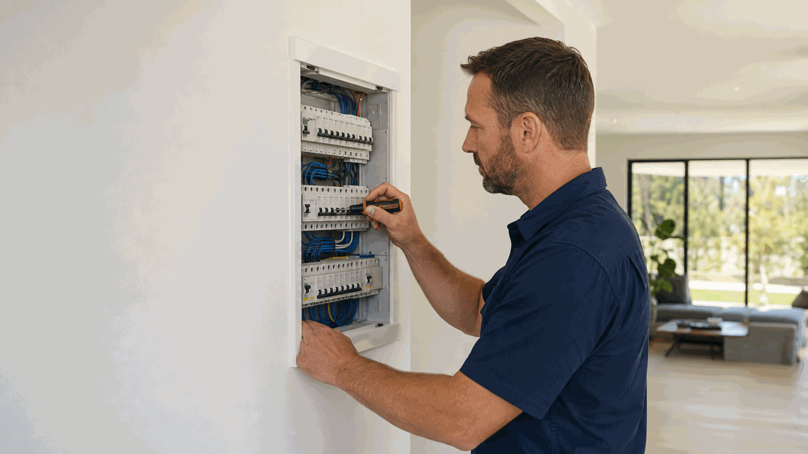

New power point
AUD $165–$275
per point · incl. GST
Use this Perth service overview to choose between lighting work, power-point work and wider electrical fault finding. The dedicated service pages explain installation, replacement and fault assessment for each task. Ellis Services Group confirms the proposed scope and written quote after assessing the existing installation.
Call 0413 477 667 Book lighting and power-point repairUse lighting installation and repairs for flickering lights, replacement fittings, LED compatibility and planned lighting positions. Describe whether the concern is one fitting or several lights, and separate a fault report from a request to change the lighting layout. The dedicated page explains the assessment and product-supply boundaries.
Use power-point installation and repairs for additional outlets, replacement power points, damaged fittings or failed switches. That page explains outlet installation and repairs. The intended use and existing installation matter; choosing this pathway does not establish that a simple fitting replacement is suitable.
Use electrical fault finding when the pattern extends beyond one fitting or the source is unclear. Use safety-switch assessment for recurring trips. A fitting request and an unresolved circuit fault are separate tasks even if they occur in the same room.
You can list a lighting change and an outlet problem together. Give each task its own location, observable symptom or intended use, then identify the person who can approve investigation and any proposed work. This helps distinguish what needs diagnosis from what is a planned installation; neither task should be assumed to cover the other.
Follow the relevant dedicated page before buying fittings, lights or outlets. Product compatibility, access and the existing circuit can affect the agreed work. Where equipment supply, additional wiring, cable routes or making good are required, those inclusions belong in the written quote. A price for a visible fitting alone does not describe the whole installation.
For linked controls or automation, use smart-home electrical services to discuss integration as a separate scope. For a combined request, the team confirms which assessment and installation tasks are accepted. Completion of one item does not certify every electrical item in the property or guarantee that an unrelated fault has been resolved.

Our Perth plumbing and electrical work is carried out by appropriately licensed trades. Licence details are available on request.
Safety: Do not use a damaged, wet or overheating outlet and do not remove fittings, covers or wiring to investigate. Keep clear of a hazard. For immediate danger, Call 000.
For fitting selection, LED compatibility, flickering and new lighting positions, use the lighting installation and repair page.
For damaged outlets, failed switches and additional or replacement power points, use the power-point service page.
Ellis Price Guide
A practical guide for standard electrical accessory work at a Perth property.
AUD $165–$275
per point · incl. GST
AUD $70–$160
per light · incl. GST
Guide conditions: These AUD ranges are for standard-hours, standard-scope work and are incl. GST. Access, materials, extra pipe, cable or circuit work, compliance work, emergency or after-hours work and unforeseen repairs are confirmed in a written quote before work proceeds.
The fitting or outlet type, existing wiring, access and intended use affect the work. Repairing an existing connection is a different scope from relocating an outlet or adding new lighting. We establish the installation requirements on site and include fittings, cable or circuit work in the written scope where required.
The final written quote sets out the work included, materials and any agreed additional tasks. We explain changes to the scope before extra work proceeds. Request a lighting and power-point repair quote.
Use the dedicated lighting page for flickering lights, LED downlights and light fitting installation. Use the power-point page for outlet installation, replacement, failed switches and power points not working. These different tasks are assessed against the existing installation; a circuit fault belongs with fault finding.
Use the dedicated power-point service page for installation, replacement and outlet faults. Read the explanation.
Use the dedicated lighting page for fitting changes, flickering lights and planned lighting positions. Read the explanation.
Use electrical fault finding when several points are affected or the source is uncertain. Read the explanation.
Include the suburb, affected fitting or planned location, number of points and whether you have already selected the equipment. Add access and approval details for rental, strata or agency work. Our local team covers all six Perth service regions from our office at 140 St Georges Terrace, Perth WA 6000.
Call to discuss the work or send the property details through our enquiry form. You do not need to diagnose the fault or complete a technical inspection before contacting us.
Call 0413 477 667 Request a visit & written quote